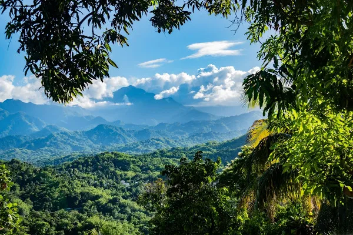
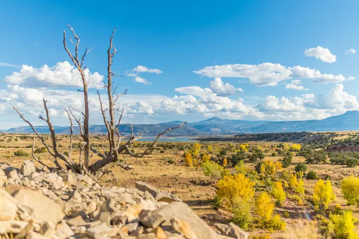
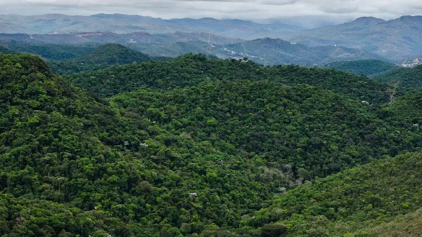
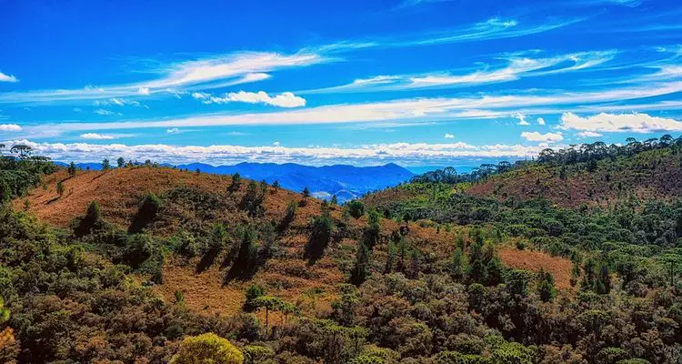
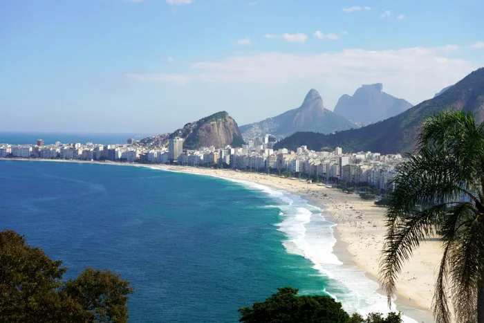
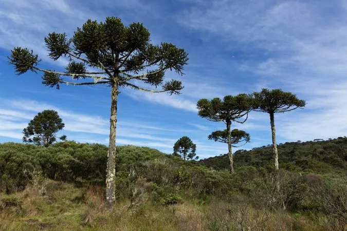

Diversidade Climática no Brasil
A diversidade climática do Brasil é influenciada por fatores como a latitude, a maritimidade e a circulação das massas de ar. Esses elementos condicionam a variedade de climas presentes no país, que se destacam tanto pela sua amplitude quanto pela sua complexidade.
No Brasil, são identificados seis tipos principais de clima:
- Equatorial: Caracteriza-se por temperaturas elevadas e elevada umidade, com chuvas frequentes ao longo do ano, o que resulta em uma vegetação densa e exuberante, como a da floresta amazonica.

- Semiárido: Clima quente e seco, com precipitações escassas e mal distribuídas ao longo do ano. Este clima predomina na região Nordeste, especialmente no Sertão, onde a escassez de água é um fator determinante para a vida local.
Tropical: Apresenta duas estações bem definidas: uma quente e úmida, com chuvas regulares durante o verão, e outra mais fria e seca no inverno. Esse tipo de clima é típico nas regiões Centro-Oeste e Sudeste do Brasil.
Tropical de Altitude: Ocupa áreas situadas a mais de 800 metros de altitude e se caracteriza por temperaturas mais amenas em comparação com o clima tropical típico. Durante o inverno, é comum o registro de geadas, especialmente nas regiões serranas.
Tropical Atlântico: Encontrado ao longo da costa, esse clima é marcado por elevada umidade e chuvas intensas, concentradas principalmente nos meses de inverno, influenciado pela proximidade com o oceano Atlântico.
Subtropical: Predominante na Região Sul do Brasil, esse clima é caracterizado por baixas temperaturas, invernos rigorosos, com possibilidade de geadas e até mesmo queda de neve em algumas áreas. A vegetação é adaptada a essas condições mais frias.

Cada um desses climas contribui para a formação de ecossistemas distintos e influencia diretamente as atividades econômicas e culturais de cada região brasileira.